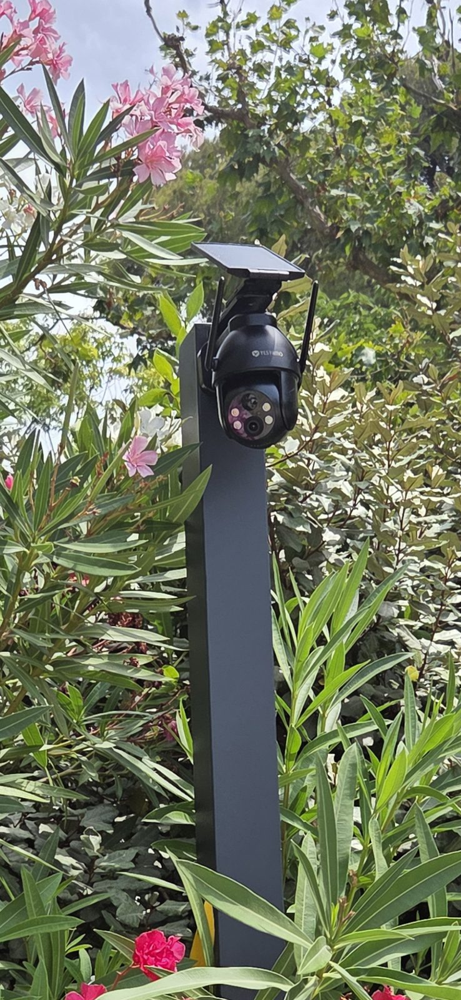

Les zones à couvrir dans un hôtel
La réception
Accueil, encaissements, remise des clés : c’est le point de passage de tout l’établissement.
Les accès
Entrée principale, entrée de service, porte du parking, issues utilisées la nuit.
Les extérieurs
Parking, façade, terrasse, local technique : pour dissuader et garder une trace en cas d’incident.
Les chambres et les sanitaires ne sont jamais filmés. Dans les espaces communs, les caméras sont placées pour protéger l’établissement tout en respectant la tranquillité des clients.

Une référence à Marseille : l’hôtel Le Drips
À l’hôtel Le Drips, à Marseille, ConforCam a installé trois caméras extérieures alimentées par panneaux solaires. Ce choix a permis de couvrir les extérieurs sans tirer de câbles en façade. Pour en savoir plus sur cette solution, consultez notre page consacrée aux caméras solaires sans fil.
Une installation qui ne perturbe pas l’activité
- Étude sur place gratuite, avec le gérant ou le responsable de l’établissement.
- Intervention planifiée selon votre occupation, pour limiter la gêne pour les clients.
- Câblage discret, ou caméras autonomes là où les travaux doivent être évités.
- Consultation sur téléphone et sur un écran à la réception, lorsque le matériel le permet.
- Matériel garanti 2 ans, sans mensualité imposée par ConforCam.
Les règles à respecter
La réception et les espaces accessibles aux clients sont des lieux ouverts au public : les filmer nécessite une autorisation préfectorale, et des panneaux doivent informer les clients et le personnel. Les images ne doivent pas être conservées plus d’un mois. Nous vous aidons à préparer le dossier ; la démarche est expliquée dans notre guide sur l’autorisation préfectorale pour les caméras d’un commerce.
Questions fréquentes
Peut-on installer des caméras dans les couloirs d’un hôtel ?
Les espaces communs peuvent être filmés à condition d’être déclarés dans la demande d’autorisation préfectorale et signalés par des panneaux. Les chambres et les sanitaires ne sont jamais filmés.
L’installation oblige-t-elle à fermer l’hôtel ?
Non. L’intervention est planifiée avec vous, zone par zone, pour que l’établissement reste ouvert.
Peut-on surveiller un parking sans tirer de câbles ?
Oui, avec des caméras autonomes à panneau solaire, comme celles que nous avons installées à l’hôtel Le Drips à Marseille.
Y a-t-il un abonnement ?
Non. Le matériel vous appartient et ConforCam n’impose aucune mensualité.
Un hôtel ou un hébergement à sécuriser ?
Nous visitons votre établissement gratuitement et vous remettons un devis adapté, au tarif fixé avant l’intervention.
Être rappelé gratuitement06 69 91 75 00